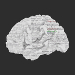

k<!DOCTYPE HTML>
<html>

<head>
  <title>Marco Tettamanti Website</title>
  <link rel="icon" type="image/x-icon" href="images/grammicon.ico"/>
  <meta name="description" content="Marco Tettamanti Website" />
  <meta name="keywords" content="Cognitive Neuroscience, Neurolinguistics, Poesia, Politics, Blog" />
  <meta http-equiv="content-type" content="text/html; charset=UTF-8" />
  <!-- stylesheets -->
  <link href="css/style.css" rel="stylesheet" type="text/css" />
  <link href="css/photos.css" rel="stylesheet" type="text/css" />
  <link href="css/light.css" rel="stylesheet" type="text/css" />
  <!-- we only want the thunbnails to display when javascript is disabled -->
  <script type="text/javascript">
    document.write('<style>.noscript { display: none; }</style>');
  </script>
  <!-- modernizr enables HTML5 elements and feature detects -->
  <script type="text/javascript" src="js/modernizr-1.5.min.js"></script>
</head>

<body>
  <div id="main">

    <!-- begin header -->
    <header>
      <div id="logo"><h1>Marco<a href="#"></a> Tettamanti</h1></div>
      <nav>
        <ul class="sf-menu" id="nav">
          <li><a href="index.html">home</a></li>
          <li><a href="neuro.html">neuro</a>
            <ul>
	      <li><a href="bio.html">bio</a></li>
	      <li><a href="cv.html">curriculum vitae</a></li>
	      <li><a href="research.html">research interests</a></li>
              <li><a href="npub.html">publications</a></li>
              <li><a href="shared.html">shared resources</a></li>
            </ul>
          </li>
          <li class="selected"><a href="personal.html">personal</a>
            <ul>
	      <li><a href="poetry_cl.html">poetry</a></li>
	      <li><a href="blog.html">blog</a></li>
              <li><a href="photos.html">photos</a></li>
              <li><a href="links.html">links</a></li>
            </ul>
          </li>              
          <li><a href="flags.html">flags</a></li>
          <li><a href="mrctttmnt at gmail.com">contact</a></li>
        </ul>
      </nav>
    </header>
    <!-- end header -->

    <!-- begin content -->
    <div id="site_content">
      <!-- start gallery HTML containers -->
      <div class="navigation-container">
        <div id="thumbs" class="navigation">
          <a class="pageLink prev" style="visibility: hidden;" href="#" title="Previous Page"></a>
          <ul class="thumbs noscript">
            <li>
              <a class="thumb" href="images/photos/photo1.jpg"></a>
              <div class="caption">
                <div class="image-title portfolio_two">neuropoetry</div>
              </div>
            </li>
            <li>
              <a class="thumb" href="images/photos/photo2.jpg"></a>
              <div class="caption">
                <div class="image-title portfolio_two">neuro</div>
              </div>
            </li>
            <li>
              <a class="thumb" href="images/photos/photo3.jpg"></a>
              <div class="caption">
                <div class="image-title portfolio_two">poetry</div>
              </div>
            </li>
            <li>
              <a class="thumb" href="images/photos/photo4.jpg"></a>
              <div class="caption">
                <div class="image-title portfolio_two">neuromap</div>
              </div>
            </li>
            <li>
              <a class="thumb" href="images/photos/photo5.jpg"></a>
              <div class="caption">
                <div class="image-title portfolio_two">neuroat</div>
              </div>
            </li>
            <!-- begin template for pictures
            <li>
              <a class="thumb" href="images/photos/pic.jpg"></a>
              <div class="caption">
                <div class="image-title portfolio_two">Caption-here</div>
              </div>
            </li>
            end template for pictures -->
          </ul>
          <a class="pageLink next" style="visibility: hidden;" href="#" title="Next Page"></a>
        </div>
      </div>
      <div class="content">
        <div class="slideshow-container">
          <div id="loading" class="loader"></div>
          <div id="slideshow" class="slideshow"></div>
          <div id="controls" class="controls portfolio_two"></div>
          <div id="caption" class="caption-container"></div>
        </div>
      </div>
      <!-- end gallery HTML containers -->
    </div>
    <!-- end content -->

    <!-- begin footer -->
    <footer>
      <ul class="flagcounter">
      <!--http://www.flagcounter.com/-->
	<a href="http://info.flagcounter.com/eIeF"></a>
      </ul>
      <p> <a target="_blank" href=copyleft.html><font color="#808080">copyleft note</font></a>  &copy; 2008-2024 Marco Tettamanti </p>
      <p> <a target="_blank" href="http://www.css3templates.co.uk"><font color="#808080">Design from css3templates.co.uk</font></a> </p>
      <p><a target="_blank" href="https://plus.google.com/113405404158310916015/posts"></a>&nbsp;<a target="_blank" href="http://scholar.google.it/citations?user=x4qQl4AAAAAJ"></a>&nbsp;<a target="_blank" href="http://www.zotero.org/groups/66799"></a></p>
    </footer>
    <!-- end footer -->

  </div>
  <!-- javascript at the bottom for fast page loading -->
  <script type="text/javascript" src="js/jquery.min.js"></script>
  <script type="text/javascript" src="js/jquery.easing-sooper.js"></script>
  <script type="text/javascript" src="js/jquery.sooperfish.js"></script>
  <!-- initialise sooperfish menu -->
  <script type="text/javascript">
    $(document).ready(function() {
      $('ul.sf-menu').sooperfish();
    });
  </script>
  <script type="text/javascript" src="js/jquery.galleriffic.js"></script>
  <script type="text/javascript" src="js/jquery.opacityrollover.js"></script>
  <script type="text/javascript">
    jQuery(document).ready(function($) {
      // we only want these styles applied when javascript is enabled
      $('div.content').css('display', 'block');
      // initially set opacity on thumbs and add additional styling for hover effect on thumbs
      var onMouseOutOpacity = 0.67;
      $('#thumbs ul.thumbs li, div.navigation a.pageLink').opacityrollover({
        mouseOutOpacity:   onMouseOutOpacity,
        mouseOverOpacity:  1.0,
        fadeSpeed:         'fast',
        exemptionSelector: '.selected'
      });
      // initialize advanced galleriffic gallery
      var gallery = $('#thumbs').galleriffic({
        delay:                     3500,
        numThumbs:                 10,
        preloadAhead:              10,
        enableTopPager:            false,
        enableBottomPager:         false,
        imageContainerSel:         '#slideshow',
        controlsContainerSel:      '#controls',
        captionContainerSel:       '#caption',
        loadingContainerSel:       '#loading',
        renderSSControls:          true,
        renderNavControls:         true,
        playLinkText:              'Play Slideshow',
        pauseLinkText:             'Pause Slideshow',
        prevLinkText:              '&lsaquo; Previous Photo',
        nextLinkText:              'Next Photo &rsaquo;',
        nextPageLinkText:          'Next &rsaquo;',
        prevPageLinkText:          '&lsaquo; Prev',
        enableHistory:             true,
        autoStart:                 false,
        syncTransitions:           true,
        defaultTransitionDuration: 900,
        onSlideChange:             function(prevIndex, nextIndex) {
          // 'this' refers to the gallery, which is an extension of $('#thumbs')
          this.find('ul.thumbs').children()
            .eq(prevIndex).fadeTo('fast', onMouseOutOpacity).end()
            .eq(nextIndex).fadeTo('fast', 1.0);

          // update the photo index display
          this.$captionContainer.find('div.photo-index')
            .html('Photo '+ (nextIndex+1) +' of '+ this.data.length);
        },
        onPageTransitionOut:       function(callback) {
          this.fadeTo('fast', 0.0, callback);
        },
        onPageTransitionIn:        function() {
          var prevPageLink = this.find('a.prev').css('visibility', 'hidden');
          var nextPageLink = this.find('a.next').css('visibility', 'hidden');
          // show appropriate next / prev page links
          if (this.displayedPage > 0)
            prevPageLink.css('visibility', 'visible');
          var lastPage = this.getNumPages() - 1;
          if (this.displayedPage < lastPage)
            nextPageLink.css('visibility', 'visible');
          this.fadeTo('fast', 1.0);
        }
      });
      // event handlers for custom next / prev page links
      gallery.find('a.prev').click(function(e) {
        gallery.previousPage();
        e.preventDefault();
      });
      gallery.find('a.next').click(function(e) {
        gallery.nextPage();
        e.preventDefault();
      });
    });
  </script>
</body>
</html>
